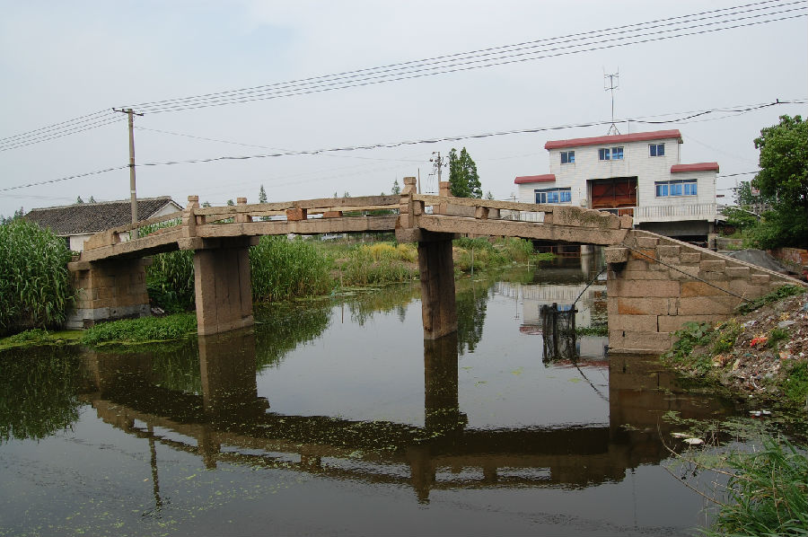

嘉兴市文物保护网 · 市级文物保护点 · 2020-11-03 · 原文

栖真村南湖大桥位于嘉兴市秀洲区油车港镇栖真村与胜丰村交界处，东临千亩荡闸站50米，又名大桥。据油车港镇文化站杨跃兴编《悠悠水乡情----古桥篇》称，建于清道光二十三年（1843）。南北横跨河港，系三孔有栏梁式石板桥，全长23.56米，宽2.32米，桥面和桥柱由4块石板并列组成，桥面两侧有石栏板、四端有望柱，桥底距水面高2.52米，南北落坡各设石阶8级和9级，桥额刻有“鼎建南湖大桥”，东侧桥联为“济四境往来彩虹环水，听一声歌乃画舫穿云，”，西侧桥联为“对绿波浩淼额农裳”，南侧竖石已落河中。该桥形制较大，年代悠久，纹饰、文字精美，具有较高的历史和艺术价值。2010年公布为嘉兴市文物保护点。